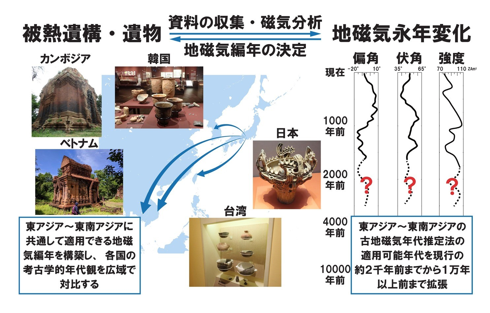

考古地磁気研究グループ
～古地磁気年代測定法の拡張と人文科学との融合研究～
名古屋大学宇宙地球環境研究所（ISEE）が九州大学アジア埋蔵文化財研究センターと連携して、東アジア～東南アジア地域の考古資料の収集・整理・磁気分析を進め、古地磁気年代推定法の適用可能年代を現行の約2000年前から新たに１万年以上前まで拡張することを目指します。これにより、各国の考古学的年代観を広域で対比することが可能になると期待されます。また、「激甚災害と年代測定グループ」と連携して炭素14年代と対比することにより、本推定法の精密化を行います。さらに、磁気分析の手法を応用し考古学・人類学などとの文理融合研究を推進します。
構成員
南 雅代
教授・室長
名古屋大学宇宙地球環境研究所
超学際ネットワーク形成推進室/年代測定研究部/国際連携研究センター
同位体地球化学、炭素14年代測定、地球年代学
放射性同位体を用いた地球年代学・地球化学の研究、考古遺物（特に骨化石や炭化物）の高精度・高確度14C年代測定のための試料処理法の開発、安定同位体をトレーサーとした古気候変動や環境動態解析の研究など、同位体を用いたさまざまな研究を進めています。現在は、産地・来歴判別を目指した同位体地球化学図の研究にも力を入れています。本プロジェクトにおいては、国内外のさまざまな分野の研究者とともに、さらなる超学際型文理融合研究を推進します。

大野 正夫
教授
九州大学・アジア埋蔵文化財研究センター
考古地磁気学・岩石磁気学
人類遺跡の窯跡や土器の考古地磁気学的研究、および、岩石や堆積物の古地磁気学的研究により、過去の地球磁場の変動を復元し、そのメカニズムを探るとともに、地球磁場変動を遺跡の年代推定に応用する研究を行っている。また海底堆積物の岩石磁気分析からは古環境変動や海底資源を研究している。
九州大学大学院 地球社会統合科学府のリンク加藤 千恵
助教
九州大学大学院比較社会文化研究院 環境変動部門 地球変動部門
古地磁気学、岩石磁気学
過去の地球磁場変動、特に磁場強度変動を解明するため、溶岩・深成岩・ケイ酸塩鉱物などの地質試料や、土器や窯跡などの被熱考古資料を用いた古地磁気測定を行っている。また、温度や酸化還元状態の鋭敏な指標である磁性鉱物を利用し、磁気測定に基づいて考古遺物の被熱履歴や熱水鉱床の生成環境を推定するための基礎的な研究を行っている。
山本 裕二
教授
高知大学海洋コア国際研究所
古地磁気学・岩石磁気学
土器や焼土などの考古資料や、火山岩や海底堆積物などの地質試料に対して、さまざまな磁気分析を行うことで、これらの資試料が形成された当時の地球磁場の強さや方位を復元するとともに、これらが形成された環境の推定を行っています。本プログラムでは、とくに、完新世以降の東アジア地域の考古資料を対象とした考古地磁気年代推定に資する地磁気方位・強度の永年変化標準曲線の構築と、その適用に取り組みます。
畠山 唯達
教授
岡山理科大学フロンティア理工学研究所
古地磁気学・岩石磁気学
私は地球科学の一分野である古地磁気学・岩石磁気学を考古学へ適用する考古地磁気学・考古岩石磁気学を専門に研究しています。考古学の現場で発掘された土器やそれを焼成していた窯などから試料を採取し、それが持つ過去の地球磁場方位・強度、および含まれる鉄鉱物を調査しています。そこから地球磁場の変遷やそれを用いた年代推定法の開発と実践をし、また鉄鉱物の変化を通した遺跡の時代の環境の復元をすることを目標としています。